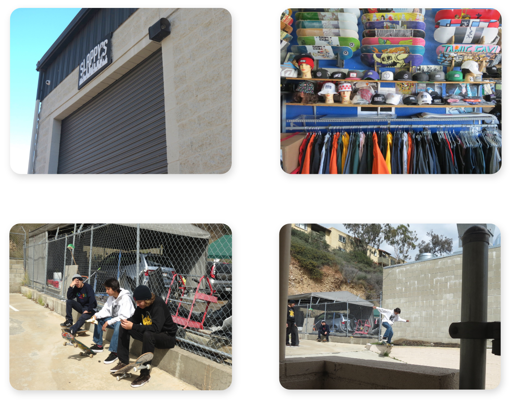
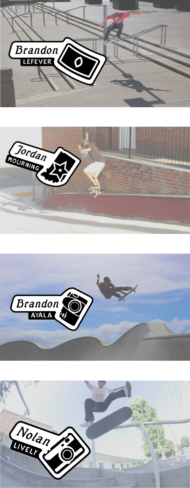
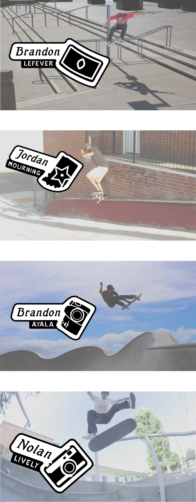

Sprouter Branding

Sprouter is a brand that connects local people who are interested in growing produce, people who already grow, and others looking buy produce in their community.
My Roles
Brand Strategist, Graphic Designer
Brand Promise
The idea for this brand is a result of my passion for cooking, combined with my emerging interest in growing produce.
Objective
To create a platform where people can learn to grow food in their local area and connect with other growers as well.
(Intended) Outcome
A platform that teaches people how to grow produce locally and connect people within their local communities.
Target Audience
Youth (10-25), Urban, Community/Family
Audience Needs
Users are interested in growing produce, they want to have fresh food at hand, and also want to connect eith other local growers.

Challenge
Designing branding that can appeal to children and adults that encorages continued use.
Solution
I solved the challenge by using simple elements to create the design so that they could be made to look more professional or casual depending on the situation.

Story
Aside from my personal passion for skateboarding, I chose to do this project because I wanted to collaborate with my friend Daniel Goycooela. I knew that he was filming and editing the Slappy’s Skateboard Garage video, which didn’t have a title at the time, and I was excited to learn more about what he was doing. I started my process by interviewing Daniel, Jason Carney the shop owner, and a few skateboarders in the video. I asked each of them how they felt about the video, and we discussed their answers together to create a description of the video’s aesthetic. Afterwards I did some more research on the actual skate shop and how it was started, to give me more background information. During this time Daniel, Jason, and the skateboarders in the video decided the title was going to be Remember This. I then used the interview and research to inform sketches and quick prototypes of the mark for the video’s title graphic. I presented these to Daniel and a few of my peers, I noted their feedback edited the prototype and continued to quickly prototype, present and edit the prototypes using the feedback.

Sketches


Mark Iterations


Design Process
I started my work by doing research on local skate brands to obsevrve how each shop expanded their brand into different touchpoints. Mos local shops I ecountered were using monochrome color palettes and simple shapes to build their marks. These work well with skateboarding, because there is so much variety in the skateboarding community, brands which represent it use simple shapes and color schemes so their branding isn’t too specific to represent that wide variety.
After receiving feedback on these prototypes from my peers and those who work for Slappy’s, I continued to refine the mark. Despite the conclusion from my research I experimented with a two color scheme suggested by the filmer and editor Danny Goycooela. These experiments showed me how much more flexible the black and white logo is. At this point in my process I realized that I needed to make a system of marks influenced by the style of the emblem created. I designed a system of marks so each team rider with a large section in the film has their own title, which features a simple illustration of something personal to them of their section.
Fonts

Both of these fonts are meant to be an updated version of the fonts in the original logo. The first font, Mutter Krause Halbfett, is an old style serif font that matches with the Slappy’s Garage original logo because of its suble thick thin stroke and slanted axis. I also removed the serifs at the top to keep the font closer to the original logo to maintain brand equity.
The second font I created myself specifically for this project. It’s called Garage Sans and I directly copied the style from the origonal logo to keep the contrast between the larger italic style font and the simple stencil font that the original logo has.
Branding System Prototypes


Final Deliverables
 
